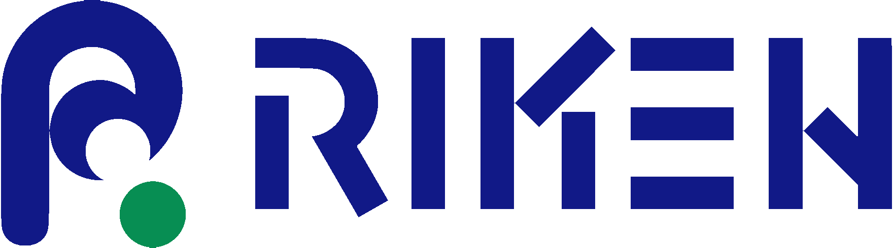

Project I Am Currently Working On
VN Family Tree
- Developing an iOS Application to keep track of family relatives with a family tree
- Wrote an algorithm to determine how to refer to certain family relatives based on their relationships with the user in Vietnamese culture
- Using Swift and Google's Firebase
August 2016 - Present


Current
 Hanoi, Vietnam
Hanoi, Vietnam  Life is What You Make It by Peter Buffett
Life is What You Make It by Peter Buffett Experience
15-112 Fundamentals of Programming and Computer Science
- Teach Recitations for a section with around 30 students
- Hold Office Hours, weekly Review Sessions, and private tutoring
- Mentor end-of-term projects for 10 students
January - December 2016
RIKEN Nishina Center For Accelerator-Based Science
- Analyzed the energy in the soils to determine the amount of radiation in the Fukushima incident
- Gathered and analyzed how much energy the gamma ray emitted in collision of carbon-12 atom and a proton, using a pelletron accelerator to experiment and Gaussian curve to fit the data
- Check out my RIKEN blog here, where I documented my internship with my partner and friend, Andy Wei
July - August 2014
The Exonian Business Board
- Oversaw day-to-day tasks of the Exonian Business Board and make sure the papers are delivered to the students weekly
- Co-wrote the 1st and 2nd edition of Exonian Business Board Workflow
September 2012 - Febuary 2015